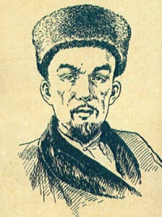

Каюм Насыйри
Календарь Каюма
Огромный вклад Каюма Насыри в развитие нации - это создание периодической печати. К изданию газеты он приступает еще в 1862 году. Газета называлась «Таң йолдызы». Проект был запрещен, поэтому газета перестала выходить. Каюм Насыри продолжает эту деятельность, издавая научно-популярный альманах «Таквим», что означает «календарь». Календари Каюма Насыри охватывали широчайший спектр тем. В них приводится сводка новостей из общественной жизни, а также области экономики.
В то же время публиковались статьи о татарских купцах и меценатах, татарских мечетях, истории Казани, исторических событиях, таких, как Пугачевское восстание, татарских и восточных ученых, и так далее. Каюм Насыри в виде изображения объясняет явление временных поясов, тем самым расширяя географические знания татар. В отдельных выпусках своих календарей он даже давал рецепт получения мыла и учил изготовлению электрических батареек.
Каюм Насыри разработал проект удивительно простого и, в то же время, «вечного» календаря для согласования дат по мусульманскому и григорианскому календарю.
Календарь состоит из двух дисков с нанесенными на них названиями месяцев согласно солнечному и лунному году.
Каждый диск проградуирован, т.е. имеет шкалу с делениями, которые соответствуют дням.
Внешний диск соответствует григорианскому календарю, состоящему из 365 дней, а внутренний – лунному календарю Хиджры с 354 днями.
В принципе, диски можно двигать относительно друг-друга по одной общей оси.
Как видим, на этом календаре достаточно один раз в год совместить даты двух систем, летоисчисления, чтобы он исправно «работал» в течение всего года.
ХИМИЯ
Перед Каюмом Насыри стояла задача просвещения в области химии и взрослой части татарского населения. Для этого он использовал интересную форму популяризации наук – ежегодные настольные календари, в которых одним из первых начал давать информацию о химических веществах. Так, в «Казанском календаре. 1873» есть два раздела, в которых говорится о бытовой и косметической химии. Разделы названы: «Несколько слов из химии» и «Несколько слов из медицины». В химическом разделе круг рассматриваемых вопросов сводится к приготовлению средств для стирки, выведения пятен различной природы с разных тканей, дезинфекции; приготовлению уксуса; изготовлению чернил; снятию копий с писем; уничтожению мышей и крыс; способам защиты лошадей и коров от комаров, слепней, мух и других насекомых. Здесь же дано несколько нравоучений о вреде алкоголя. Полезные советы по уничтожению клопов, блох и тараканов приведены в медицинском разделе календаря. Для составления очищающих средств Каюм Насыри рекомендовал в разных соотношениях использовать вещества органического и неорганического происхождения. Из огранических веществ в состав очистителей входили: можжевеловое масло, бычья желчь, терпентин, или скипидарное масло, венецианский терпентин, французская водка. Неорганическими компонетами состава были поташ, известковая вода, «толковая» глина, нашатырь, винный камень. Кроме того, в состав очищающих средств могли входить белое мыло, мед, сахар. Для тех, кто не имел возможности купить мыло, Каюм Насыри советовал использовать в качестве моющего средства папоротник. Технология приготовления уксуса предусматривала использование ржаного и ячменного солода, дрожжей, малины, гороха. Рецепт изготовления чернил содержал кампешевое дерево с красящим веществом гематоксилином, купорос, лавандовое масло. Смесь, защищающая домашних животных от слепней, мух и комаров, по рекомендации Каюма Насыри, составлялась из горького вещества сабур (сгущенного сока листьев различных видов алоэ), полыни, водки или спирта и уксуса. В борьбе с грызунами эффективным средством считался морской лук, из которого вместе с внутренним жиром животных и мукой изготавливали отравляющие лепешки. В качестве средств для уничтожения бытовых насекомых предлагалось использовать керосин, скипидар, белую полынь. Однако наиболее эффективным средством, как сообщал Каюм Насыри, был порошок, который можно было купить в магазине «Химическая лаборатория». 280 Компонентный анализ рецептов, представленных Каюмом Насыри в медицинском разделе календаря, позволяет иметь представление о веществах, используемых химиками и фармацевтами в 70-х годах XIX века. Для составления тех или иных косметических и лечебных средств востребованными были вещества, созданные природой. Из веществ неорганической природы использовали квасцы, серу, нашатырь, буру, поташ, уголь. Компонентами органического происхождения служили масла, бальзамы, ароматические смолы. В частности, в рецептах упоминаются барабановое, деревянное, мятное, коричное масла, бальзам Самахотова, мирра, ладан. В данный ряд веществ природного происхождения можно включить имеющую характерный запах камфару, резко пахнущий уксус, а также специфически пахнущие мыла, являющиеся продуктами переработки животных и растительных жиров. Кроме того, в рецептах Каюма Насыри в качестве медикаментов были названы вещества растительного происхождения: травы, фрагменты деревьев и их плоды, ягоды, фрукты и овощи. При этом некоторые из них произрастают на территории России, а некоторые – за ее пределами. Из местной растительности использовали шалфей, корень репея, ячмень, соки вишни, смородины, моркови. В перечень привозных веществ входили масло и молоко миндаля, мускатный орех, хна, лавровый лист, лимон, померанец (горький апельсин), семена кардамона. Натуральными продуктами, используемыми в рекомендованных косметических и лекарственных составах, были: белок и желток куриного яйца, красный мед, парное мясо, молоко, жир кита, куриный жир, свиной жир, желтый воск. По прописям Каюма Насыри в качестве растворителей следовало использовать воду, дождевую воду, цветочную воду (духи или одеколон), а также французскую водку и спирт. Химическая тема, начатая Каюмом Насыри в «Казанском календаре. 1873», была продолжена в «Казанском календаре. 1875» в разделе «Несколько слов из технологии». В данном разделе рассмотрена технология получения крахмала из пшеницы и картофеля; описан процесс изготовления пироксилина (нитроцеллюлозы); рассказано о так называемой «химической бутылке» с зажигательной смесью, используемой в былые времена вместо спичек; представлены составы курительных порошков и свечей, испускающих при горении запахи благовоний; дана рецептура приготовления одеколонов, масляного и спиртового лака, а также сурика. Названия большинства химических веществ, встречающихся в рассматриваемых технологиях, русскоязычные. Исключением являются татарские названия химических веществ, имеющих в первую очередь бытовое назначение. Так, при рассмотрении технологии получения крахмала, процесса изготовления пироксилина, действия «химической бутылки» Каюмом Насыри была использована русскоязычная терминология. Это крахмал, клейковина, фермент, коллоид, сероводород, углекислота, молочная кислота, азотная кислота, серная кислота, уксуснокислый аммиак 1 , хлорнокислый калий, канифоль, фосфор, азот. Подобная терминология характерна и для описания рецептур приготовления одеколона, лаков и сурика, например, масляный лак, янтарь, канифоль, даммара, асфальт, скипидар, алкоголь, спирт, воск, венецианский терпентин, французский терпентин, сандарак, свинцовый глет, свинцовая окись, сурик, цинковый купорос, гипс, магнезия. К терминологии на татарском языке, использованной в статьях технологического раздела, относятся порох, гремучая вата, сера, смола, цветочная вода, духи, уголь, мед, краска, мел, льняное масло. 1 Здесь и в дальнейшем сохранена русскоязычная химическая терминология первоисточников, несмотря на то, что она не соответствует современной химической номенклатуре.Исследователи педагогического наследия Каюма Насыри пишут о том, что некоторые медицинские рецепты в его календарях взяты из народной медицины и из трудов средневекового ученого Ибн Сины.
Как К. Насыри знакомил с искусством гальваники
Конец XIX в. связан с преподаванием светских наук, в том числе физики в татарских мектебах и медресе. Первые татарские переводные учебники по физике были изданы в начале ХХ в. Выдающийся татарский просветитель Каюм Насыри в своем учебнике «Санаигъ гыйльфания» («Искусство гальваники»), изданной в 1900 году знакомил читателей с новым направлением в науке - гальваникой. Тогда он первым пытался ввести татарское название электричества - гәрәбэ куәте (сила (мощь) янтаря). Позднее все таки укрепилось название введенное Г. Ибрагимовым-Шенаси - электрик көч (сила электричества)\
Во введении «Санаигъ гыйльфания» К. Насыри с сожалением отмечал, что по многим направлениям науки, в т.ч. и по естествознанию, татарский язык отстает, причиной тому, в первую очередь, он считал отсутствие специальной литературы.
Учебник «Санаигъ гыйльфания» состоит из тридцати страниц и разделен на главы, отражающие различные отрасли гальваники:
1. Хикмэте гыйльфания (гальваника);
2. Хикмэте гыйльфаниянең ихтирагы (яңалыгы) (новизна гальваники);
3. Алэте гыйльфания (гыйльфания кораллары) (орудия гальваники);
4. Гонсыр бэсыйтэ (гади элемент) (простой элемент);
5. Мерэккэб гонсыр (катлаулы элемент) (сложный элемент);
6. Куәте кәйрэбаиянең менмаэ (электр көче барлыкка килү) (возникновение электрической силы);
7. Биәр гыйльфан (гыйльфан коесы) (скважина гальваники);
8. Тутыяны милхеяшэмэк (цинкны кунэ суна ману) (обмакивание цинка во ртуть);
9. Гыйльфан гамәле (действие гальваники).
Гальванотехника
– область прикладной науки, позволяющая осуществлять процессы электролитического осаждения металлов на поверхность металлических и немеаллических изделий. В XIX веке процессы электроосаждения металлов производили с использованием химических источников тока (гальванических элементов), которые могли быть изготовлены на ремесленном уровне. Такая технология нанесения металлических покрытий была прогрессивной и безопасной по сравнению с древними технологиями амальгамной металлизации и нанесения покрытий (например, золота, серебра) погружением предметов в их расплавы. По предположению Каюма Насыри, новая технология была бы востребована татарскими мастеровыми, издревле занимающимися изготовлением художественных изделий из металлов. В особенности процессы золочения и серебрения могли привлечь внимание золотых дел мастеров. Возможно, что новая технология металлообработки способствовала бы возрождению традиционного ювелирного ремесла татар, пришедшего по ряду причин в упадок в середине XIX века. До этого, в течение многих веков, ювелирные украшения булгарских и татарских мастеров славились во всем мире. Кроме того, прикладная наука гальванотехника была привлекательна для ученого энциклопедиста Каюма Насыри тем, что представляла собой синтез теоретических знаний 282 по физике и химии
Вклад К. Насыри в математическое образование татарского народа
В 1873 году из-под его пера выходит учебник « Хисаплык яки гыльме хисап»( «Арифметика или курс арифметики» ), состоящий из 188 страниц- один из его математических трудов, а в 1895 году -«Геометрия», сыгравшие исключительную роль в истории начального математического образования среди татар.
В предисловии к книге автор пишет: «Это хисаплык или так называемая арифметика есть такая наука, изучив которую можно вычислить, не поддающиеся вычислению простым счетом». Это учебник написан в форме перечня правил для решения различного рода практических задач, которые приведены по всему тексту. Весь материал в учебнике расположен в таком порядке: о числах (однозначном, двухзначном, трехзначном и т.д.); разряды и классы чисел (включая квадриллионы); действия над целыми числами (правила сложения, вычитания, умножения и деления); о действиях над именованными числами (правила сложения, вычитания, умножения и деления); общие задачи на вычисление. В «Хисаплык» вместо арабских терминов, употреблявшихся ранее в арифметике, он впервые вводит татарские; «сан» - число (а. «гадэт), «Джию» -сложение (а. «джамгы»), «аеру» - вычитание (а. «тарх»), «сугу» - умножение (а. «зарыб», «Булю» - деление (а. «таксим»), также понятия «кимутаси сан» (уменьшаемое), «алынган сан» (вычитаемое), «калдык» (остаток), «сугылмыш сан» (множимое), «суккыч» (множитель), «сан чыгышы» (произведение), «буленасы сан» (делимое), «бульгуч сан» (делитель), «пай» (частное), «ульчау саны» (именованное число), «ульчау саннарын ваклау» (раздробление) и др.
Следует отметить, что из многих терминов, введенных им в арифметику, прочно вошли в татарский литературный язык и поныне употребляются в школьных учреждениях.
В учебниках К.Насыри творчески синтезированы достижения двух культур: татарской и русской. Он широко использовал в своих учебниках методические идеи русских педагогов второй половины XIX века. В частности, в предисловии к своей арифметической рукописи упоминает видного русского педагога И.И.Гаульсона, арифметикой которого он пользовался. Но эти идеи не только преломились через призму самобытности содержания и методических принципов, разработанных лучшими представителями татарской математической школы, но и получили своё дальнейшее развитие в трудах К.Насыри. Как арифметическая, так и геометрическая рукописи К.Насыри послужившие первичным материалом для построения первых учебников для татарских школ на родном языке, могут служить в этом отношении убедительным примером. Содержание, система и методы изложения учебников у К.Насыри просты и ясны; они написаны доступным языком для учащихся татарских школ. Примеры и задачи, освещающие некоторые области применения математики, взяты из жизни. Несмотря на широкий круг арифметических и геометрических сведений, сообщаемых в учебниках, все же основная их цель и направление заключается в знакомстве учащихся с некоторыми первичными арифметическими и геометрическими понятиями и фактами и в дальнейшем - в использовании сообщаемых сведений при решении практических задач.
Учебник арифметики, как и другие его труды, получил хорошие отзывы со стороны русских ученых того времени. По поводу учебника арифметики проф. Н.Ф.Катанов писал следующее: «Хисаплык (числительница, или арифметика) – это татарская книга, изложения не по старинному арабскому, а по новому европейскому способу, притом хорошим общепонятным языком, принадлежит известному казанскому ученому Абдул-Каюм Насырову и в количестве 1200 экземпляров выпускается вторым изданием, значительно увеличенным против первого, вышедшего в свет еще в 1873 году... Термины все придуманы весьма удачно и составлены из коренных татарских слов, взамен совсем непонятных древнеарабских, фигурировавших доселе в учебниках. Вообще учебник Насырова представляет весьма полезную и достойную внимания новинку в татарской педагогике».
Учебник «Ысулы дҗуграфия» по географии арабских стран конца XIX века. Текст написан на татарском языке арабским шрифтом. Имеет 138 страниц.
Является 3 томом. Учебник имеет графические изображения и карты. На титульном листе на левом нижнем углу имеется личная печать К. Насыри. Учебник был представлен в музейную коллекцию д.ф.н, специалистом по древним рукописям и редким книгам в арабской графике Ахметзяновым М.И. Книга имеет последствия бытования: бумага пожелтела, загрязнена, очень ветхая, обложка и переплет отсутствуют, множество пятен и разводов, множественные скручивания страниц и заломы углов, сгибы.
